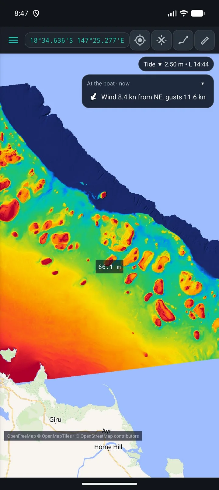
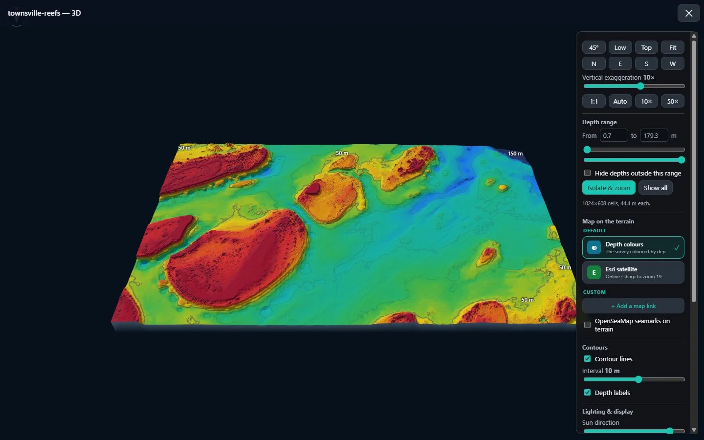
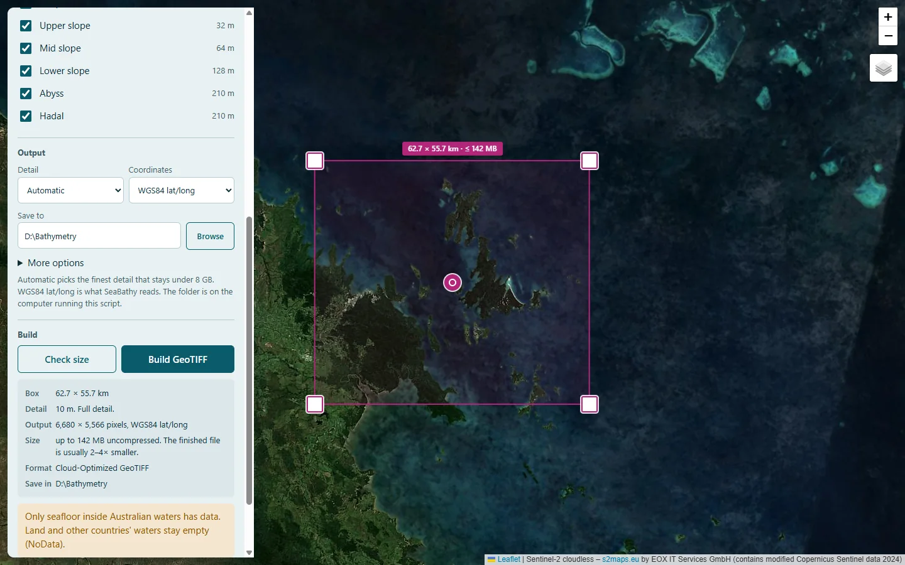
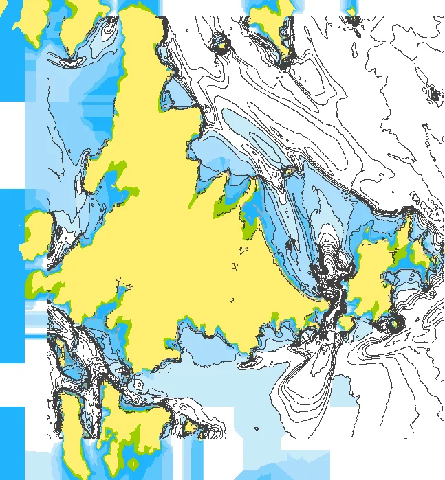
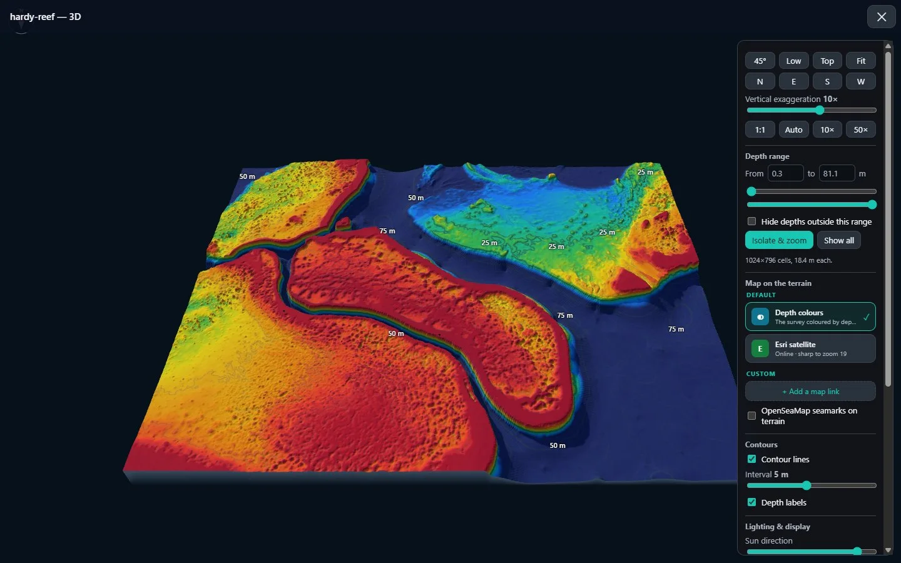
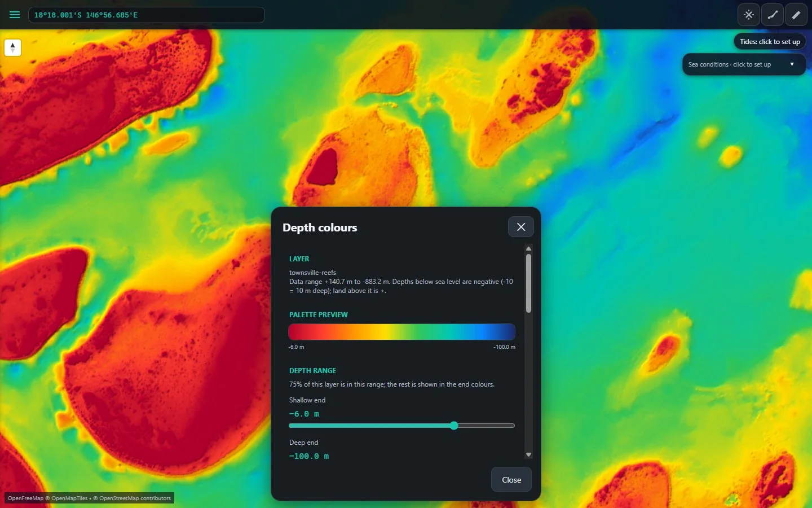
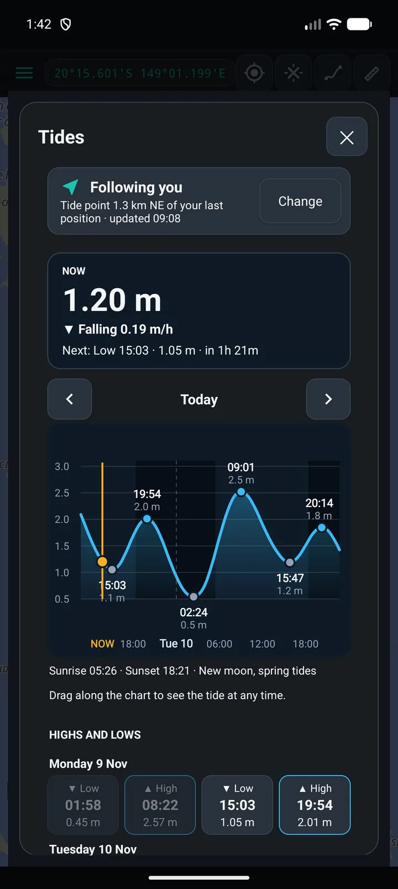
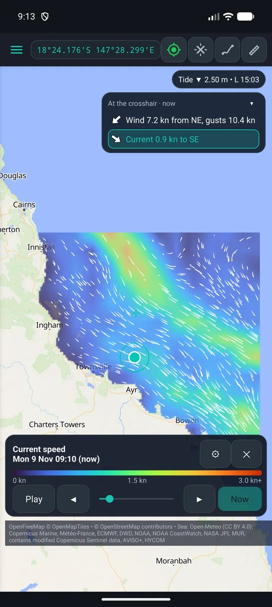
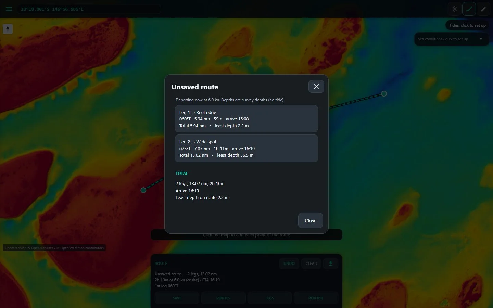
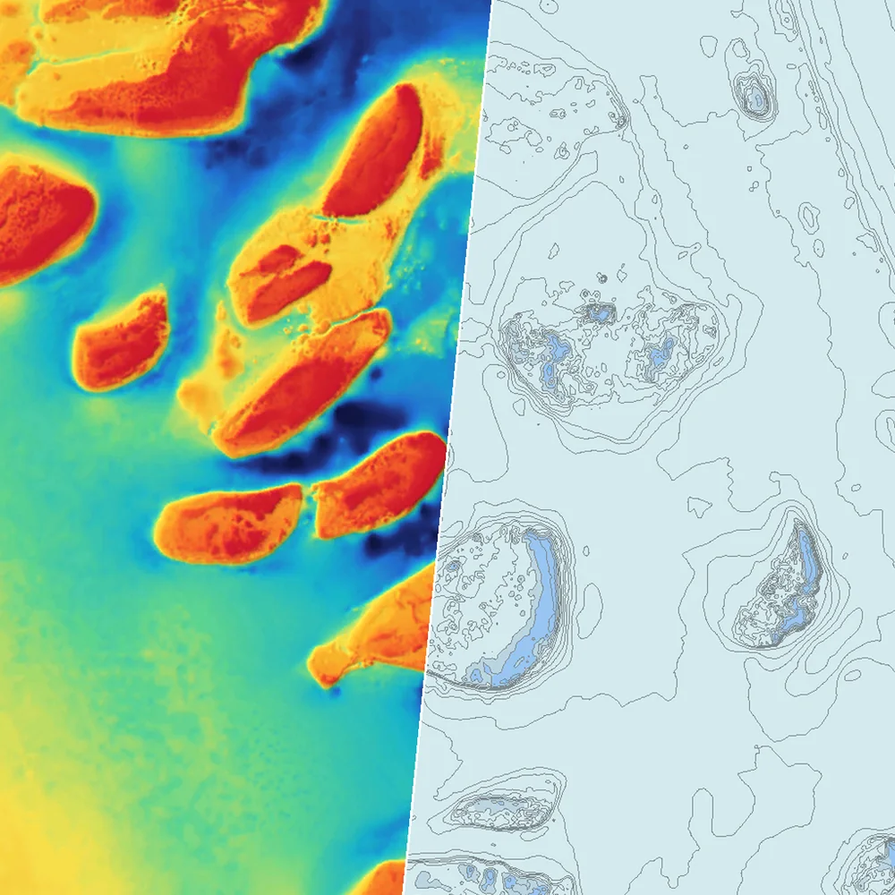

Android
SeaBathy
The seabed in your pocket. Open any GeoTIFF or MBTiles in 2D and 3D, with offline maps, tides, sea conditions, routes and an anchor alarm.
Free & open source · Works anywhere
Open any bathymetry you have, any GeoTIFF or MBTiles at any resolution, and fly over it in 3D. Plus offline maps, tides and charts for your plotter. No account, no subscription.

Seabed: IMAS bathymetry composite (CC BY 4.0), resampled. Live 3D, drag to turn.
Four apps · one toolkit

Android
The seabed in your pocket. Open any GeoTIFF or MBTiles in 2D and 3D, with offline maps, tides, sea conditions, routes and an anchor alarm.
Windows
Plan on the big screen. The same maps and 3D for your own GeoTIFF and MBTiles files, anywhere in the world, sharp to every pixel of the data.


Features

3D seabed
Fly over any depth file in 3D. Stretch the relief up to 100× so walls and channels stand out, add contours, and drape satellite or your offline maps over the seabed.

Depth colours
Seven palettes, relief shading and a depth range you set. Presets for reefs, inshore, coastal and offshore get you started in one tap.


Tides · conditions · offline
Save satellite maps, tides, wind, swell, currents and sea temperature before you leave the ramp. Everything you saved works with no signal.

Plan
Waypoints and routes with the least survey depth on every leg, checked against your draft. GPX in and out, so marks move between your phone, PC and plotter.

Chartplotter
AT5 Chart Maker turns a depth survey into the two layers your Simrad, Lowrance or B&G plotter shows: a shaded depth picture for the photo overlay, and contour lines as a chart. Make both or just one, and choose which depths each shows.
How to
Open BathyPicker, drag the box over the water you fish, press Check size, then Build GeoTIFF. A bay takes seconds. Any GeoTIFF or MBTiles you already have works too.
Phone: SeaBathy → Settings → Load GeoTIFF, and pick it from Download/BathyPicker. PC: drag the file onto SeaBathy Desktop. Then tap Colours or 3D view.
Phone: it's saved, so it works with no signal. Plotter: open the same file in AT5 Chart Maker, press Convert and copy the folder to the SD card.
Your data · open data
Free for everyone. Open source under the MIT licence.